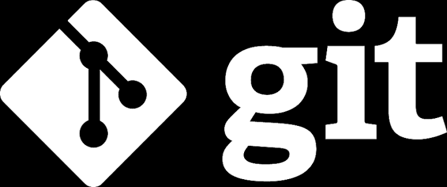

O que é Git?
O Git é um sistema de controle de versão distribuído, criado para registrar o histórico de edições em arquivos e permitir o trabalho em equipe sem sobrescrever o código de outros desenvolvedores.
Git
Aprenda os conceitos fundamentais do sistema de versionamento mais usado no mundo.

O Git é um sistema de controle de versão distribuído, criado para registrar o histórico de edições em arquivos e permitir o trabalho em equipe sem sobrescrever o código de outros desenvolvedores.
git config --global user.name "Seu Nome"
git config --global user.email "seuemail@exemplo.com"
| Comandos | Funções |
|---|---|
|
Inicializa um novo repositório Git na pasta atual. |
|
Exibe o estado dos arquivos (modificados, salvos ou não rastreados). |
|
Adiciona as alterações para a área de preparação (staging area). |
|
Salva uma versão (snapshot) das alterações com uma mensagem explicativa. |
|
Exibe o histórico de commits realizados no projeto. |
| Comandos | Funções |
|---|---|
|
Conecta seu projeto local a um repositório no GitHub. |
|
Envia os commits locais para o repositório remoto. |
|
Baixa e aplica as atualizações mais recentes do repositório remoto. |